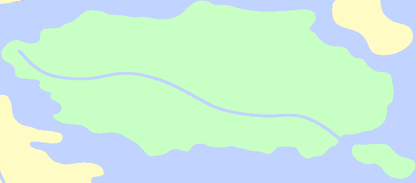
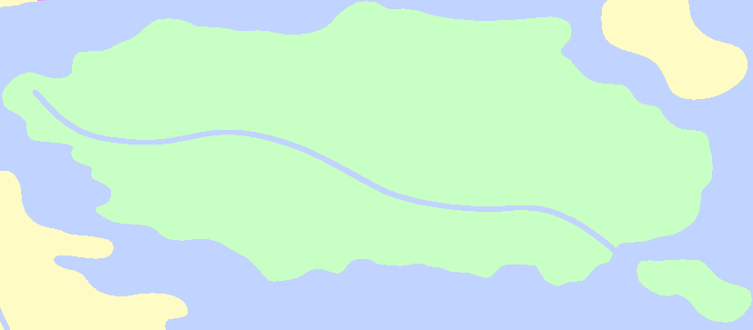

The Lilieaeta
Brimsanguids originated in the Lilieaeta, and though only seven of these species remain, they all continue their endless wars in the caverns deep below the region's surface. Populations of brimsanguids including fury dragons in the region tend to be far more aggressive in the Lilieaeta than elsewhere.
Most creatures tend to avoid traveling along the surface of the region, where carnivorous grasses dominate a large portion of the landscape. The soil on the surface is relatively low in nutrients, and these grasses have evolved carnivory in an effort to thrive.
Close